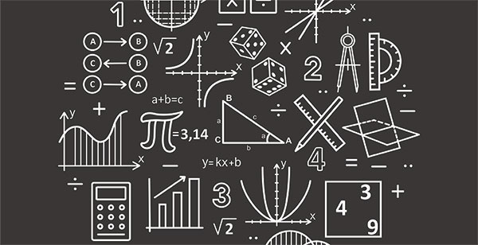
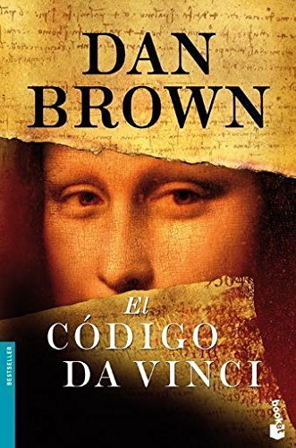
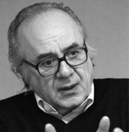

Mi nombre es Kevin Yassir Fuentes García, alumno de la ESCOM
En esta página web presento 5 libros que he leído, han sido de mi agrado y que recomiendo ampliamente
Mis libros recomendados
¿Es Dios un Matemático?
Portada del libro "Es Dios un matemático"
Autor: Mario Livio
Retrato de Mario Livio
Datos bibliográficos (versión en español):
ISBN: 978-8434469518
Año:
Editorial: Ariel
País: España
Pesonajes (personas nombradas en el libro):
Pitágoras de Samos,
Aristóteles,
Platón,
Jesucristo,
Euclides,
Galileo,
Descártes,
Newton,
Leibniz,
Einstein,
Gödel,
Cantor,
Bertrand Russell,
Rice,
Alan Turing,
Michio Kaku,
etc.
Resumen:
Es un libro escrito en prosa, no es un libro técnico, pero me causó una gran fascinación mientras lo leía, pues a través de sus páginas pude comprender el gran poder que tiene esta rama del conocimiento, y darme cuenta que es el lenguaje más importante para la humanidad. En sus primeros capítulos sí hace referencia a Dios principalmente porque se habla de los matemáticos
de la antigua Grecia y la doctrina que practicaban hacia los números, para ser específicos, sobre los pitagóricos y su adoración a un ente matemática llamada Tetraktys, (Τετρακτύς en griego) esta es una figura triangular que consiste en diez puntos ordenados en cuatro filas, con uno, dos, tres y cuatro puntos en cada fila.
El uno era el punto; el dos, la recta; el tres, la superficie; y el cuatro, el volumen. Y los cuatro sumados daban el número diez, que es el número perfecto.
Los pitagóricos la consideraban la clave de todas las armonías que gobiernan el mundo, pues creían también, que los números eran la esencia de las cosas.
Mucho se habla sobre la relación de las matemáticas con la lógica Aristotélica, es decir, la forma de axiomatizar y cómo se utilizan las estructuras lógicas para demostrar hechos matemáticos, pero luego el autor llega a la conclusión de que la lógica solo fue combustible para que la matemática, con el paso de poco más de 4 milenios, se haya desarrollado de manera sorprendente.
En los demás capítulos el autor se dedica a hablar sobre muchos personajes y sucesos importantes para la matemática, habla sobre Platón, Euclides, Arquímedes, Galileo, Descartes, Newton, Leibniz etc. Hace mucho énfasis en la forma en que la matemática encaja para poder explicar el universo y la naturaleza, a tal grado de entrar en debate sobre si las matemáticas fueron inventadas por Dios para crear el universo y el ser humano solo las descubrió, o si las matemáticas son completamente una invención del ser humano y menciona de modo contrastante las ideas de distintos científicos y filósofos, dando a entender que ni siquiera estas personas se han puesto de acuerdo sobre si se inventó o se descubrió. De hecho se llega a mencionar que las matemáticas están presentes en la naturaleza sin necesidad de que el ser humano las observe, es decir que la mente del ser humano no necesita estar presente para que las matemáticas estén ahí, incluso dice que la forma en que la mente funciona puede ser modelada matemáticamente.
También hay unos capítulos que el autor dedica a hablar sobre aquellas ocasiones en que alguna idea matemática fue desarrollada sin la intención de aplicarla, es decir, que nació de la matemática pura, pero que años o siglos más tarde encajó perfectamente con alguna aplicación a otra rama de la ciencia o ingeniería.
Como en todo buen libro debe haber una parte contrastante, después de discutir su eficacia y de hablar tan bien de las matemáticas, hace referencia a sus momentos oscuros, sus atrasos, y situaciones de incertidumbre que los matemáticos tuvieron que pasar en determinado momento. Después de que uno como lector se empieza a hacer la ilusión de que esta rama del conocimiento es todopoderosa, el autor habla sobre Gödel y su teoría de incompletitud y cómo marcó los límites o fallos de la matemática.
Pero a pesar de eso, el autor concluye su libro diciendo que la matemática ha acompañado al hombre y lo seguirá acompañando para su bien.
Opinión propia:
Con este libro quedé fascinado, lo compré por mera casualidad, pues en una ocasión con unos amigos decidimos entrar a una librería a comprar un rompecabezas, y al momento de pagar, un ejemplar con el título “¿Es Dios un matemático?” posó frente a mí.
Es un libro que no solo presenta mucha historia relevante, sino que se dedica a discutir o debatir ideas referentes a la matemática, citando a múltiples personas ilustres. En pocas palabras es un libro que nutre, que contrasta y que por dichas razones, agrada bastante al lactor.
Desde pequeño me he considerado un aficionado a las matemáticas, en el sentido de que a pesar de que no soy experto en la materia y tampoco la estudio de tiempo completo, siento un gran aprecio y pasión por todo lo que se puede hacer con ellas.
Fue con esta obra que tuve mi primer contacto con la historia de las matemáticas, fue aquí que conocí su poder, sus límites... y realmente le terminé de agarrar más cariño a la materia.
Hay unos cuantos fragmentos de este libro que me parecieron muy relevantes y que creo que merece la pena citar:
Mario Livio dice:
La filosofía está escrita en el gran libro que está siempre abierto ante nuestros ojos (me refiero al universo) pero que no podemos comprender si no aprndemos
en primer lugar su lenguaje y comprendemos los caracteres en los que está escrito, Está escrito en el lenguaje de la matemática, y sus caracteres son triángulos,
círculos y otras figuras geométricas, razones, números y fórmulas, sin las cuales no es humanamente posible comprender ni una sola de sus palabras, y sin las cuales
se deambula vanamente por un laberinto de tinieblas.
Siglos antes de que se formulase siquiera la pregunta de por qué la matemática era tan eficaz, ¡Galileo creia poseer la respuesta! Para él
la matemática no era más que el idioma del universo. Para comprender el universo, decía, es necesario hablar su idioma. Dios es evidentemente un matemático.
En otro de sus capítulos Mario Livio menciona:
David Hilbert asignó la tarea de garantizar la solidez de los cimientos de la matemática a una nueva disciplina que denominó metamatemática, esta
trataba el uso de los propios métodos de análisis matemático para demostrar la consistencia de todo el proceso formal de derivación de teoremas a partir de axiomas
mediante estrictas reglas de inferencia. Dicho de otro modo, Hilbert opinaba que podía demostrar matemáticamente que la matemática funcionaba para cualquier problema
...Pero de un solo golpe Kurt Gödel, que contaba con solo 24 años, atravesó con una estaca el corazón del formalismo matemático, cuando publicó sus Teoremas de incompletitud
En su obra, los dos teoremas estaban enunciados y demostrados en un lenguaje estrictamente matemático, pero de manera simplificada son:
1. Cualquier formalización consistente S en la que se puedan efectuar operaciones aritméticas elementales, es incompleta respecto de los enunciados de la aritmética
elemental; esto es, hay enunciados cuya verdad o falsedad no se puede demostrar dentro de S.
2. Para cualquier formalización consistente S en la que se puedan efectuar operaciones aritméticas elementales, no es posible probar la consistencia de S dentro de S.
Los teoremas de incompletitud demostraban que el plan formalista de Hilbert estaba esencialmente condenado al fracaso desde el principio. Gódel demostró
que cualquier sistema formal lo bastante potente como para tener algún interés es, de forma inherente, o bien incompleto o bien inconsistente.
Es decir, en el mejor de los casos, siempre habrá enunciados dentro del sistema formal cuya verdad o falsedad no podrán demostrarse. En el peor de los casos, el sistema generará contradicciones.
Ilustraciones referentes al libro:
Secta Pitagórica en la Antigua Grecia

Ilustración referente sobre matemáticasTetraktys: Entidad matemática adorada por los pitagóricosLa proporción aúrea: Una proporción presente en la naturaleza
La gran novela de las matemáticas
Portada del libro "La gran novela de las matemáticas"
Autor: Mickael Launay
Retrato de Mickael Launay
Datos bibliográficos (versión en español):
ISBN: 978-6077475590
Año:
Editorial: Paidós
País: México
Personajes:
Principal: Mickael Launay
Secundarios:
Pitágoras, Al Jwarizmi, los matemáticos anónimos de la India y de China, Euclides, Arquímedes, Descartes, Galileo, Bombelli, Cardano, Galois, Viéte, Los Bernoulli, Leonhard Euler, Gauss, Newton, Leibniz, Gödel, Cantor, Russell, Ada Lovelace, Babbage, Alan Turing, George Polya, etc.
Resumen
Es una novela en que el autor va narrando, de forma muy bonita y apasionada la historia de la matemática desde sus orígenes hasta la actualidad, esto, mientras da un paseo por Paris Francia y visita diversos museos, lugares de investigación y sitios icónicos que permiten introducir distintas ideas, historias, anécdotas y personajes de las matemáticas.
En este libro pude entender que la matemática es el área del conocimiento más antigua y desarrollada que existe, incluso más antigua que la propia lógica de Aristóteles. En el primer capítulo pude comprender que la matemática no solo son números, sino que comprende una habilidad que el ser humano desarrolló al estar en contacto con la naturaleza, y que también existen otras especies que han desarrollado habilidades o tienen comportamientos matemáticos.
Ha sido en este libro que pude darme cuenta que, las matemáticas nacen de la capacidad que desarrolló la especie humana de encontrar similitud o comparar cosas, en especial de la habilidad que obtuvo para hallar simetrías. De hecho, al entender que la simetría y la dualidad fueron las primeras ideas matemáticas que el ser humano plasmó, pude darme cuenta porqué tanta obsesión de los matemáticos por tener una recta numérica con números positivos y negativos, el porqué de que en álgebra abstracta exista la teoría de grupos, incluso la razón por la que el humano inventó un sistema binario y porqué después lo utilizó en computación.
El autor habla sobre cómo el ser humano aprendió a contar, sobre cómo se desarrolló la geometría, el álgebra, la teoría de conjuntos, teoría de números, el cálculo, los números complejos etc. Incluso en este libro se puede ver que durante muchos años no hubo una notación fija para las expresiones matemáticas, es decir, se explica que los símbolos de la notación actual surgieron de muchos lados y no fue hasta el siglo XVII que se estableció un estándar para escribir expresiones.
En este libro se habla sobre Pitágoras, Al Jwarizmi, los matemáticos anónimos de la India y de China, sobre Euclides, Arquímedes, Descartes, Galileo, Bombelli, Cardano, Galois, Viéte, los Bernoulli, Leonhard Euler, Gauss, Newton, Leibniz, Gödel, Cantor, Russell, etc. Y de manera resumida, pero interesante, los aportes que realizaron a las matemáticas.
En este libro se menciona cómo es que muchos de los imperios más poderosos del mundo y los que actualmente son los países más desarrollados tecnológicamente, invirtieron contratando a matemáticos influyentes para que trabajaran en sus universidades, con la intención de que realizaran investigación y compartieran su conocimiento a los estudiantes.
En esta obra pude comprender por qué y cómo se llegó a la axiomatización de las matemáticas, la importancia de las hipótesis, los teoremas, las conjeturas, y una idea muy general sobre técnicas de demostración. Además de que se explican de manera muy sencilla las ideas de Gödel que le dieron un total giro a esta rama del conocimiento.
Es un libro lleno de datos curiosos, acertijos y anécdotas matemáticas del autor, incluso en una parte del libro, el autor enseña cómo crear un sistema axiomático para definir nuestra propia matemática.
En fin, considero que este libro vale mucho la pena para todo aficionado a las matemáticas o bien para aquellos que no lo son, no es nada difícil de leer, pues no tiene conceptos técnicos, el autor va desarrollando todo de poquito a poquito. Una vez que se termina de leer el libro es casi seguro que el lector termine entendiendo el valor de las matemáticas en nuestra vida o bien agarrándole el gusto.
Opinión propia:
Este es otro libro más sobre matemáticas con el que quedé fascinado, sobre todo porque es fácil de leer, ya que toda idea que se expresa está condensada y simplificada a tal grado de que un adolescente de secundaria pueda entenderlo.
Considero que es necesario aprender la historia de dónde surgieron las matemáticas para poder entender las matemáticas, creo que "La gran novela de las matemáticas" es un libro obligatorio para todos aquellos que estudien una licenciatura en matemáticas,
una ingeniería o hasta para aquellos que se preparan para ser educadores de nivel primaria, secundaria y preparatoria, pues hay que entender las bases para facilitar tanto el aprendizaje propio como la transmisión del conocimiento a otras personas.
De alguna u otra manera, aquellas personas que leen esta obra podrán desapegarse de esos mitos que rodean a las matemáticas, podrán ver que las matemáticas son una noción natural del ser humano y no solo procedimientos o mecanismos, terminarán dándose
cuenta de la inmensa importancia de esta rama del conocimiento.
Hay unos fragmentos del libro que vale la pena citar:
En un capítulo, Mickael Launay habla sobre el grandioso Arquímedes:
Allí, en el año 287 a.C., un hombre cuyo ingenio e inventiva van a inaugurar un nnuvo estilo de las matemáticas. Arquímedes es del temple de los grandes inventores, de los
solucionadores de problemas, de las personas capaces de tener ideas debidamente nuevas y revolucionarias...
...Mientras se daba un baño, descubrió el principio físico que hoy lleva su nombre.
... Se cuenta que un día en que Siracusase hallaba asediada por la flota romana, Arquímedes inventó un sistema de espejos que permitió concentrar los rayos de sol para
incendiar las naves enemigas que se aproximaban.
... A Arquímedes le debemos los primeros grandes avances tras la pista del numero Pi... a fuerza de cálculos acaba por concluir que el valor que busca está comprendido entre dos números
que valen entre 3.1408 y 3.1428
... En el año 212 a.C. las tropas romanas lograron entrar finalmente en Siracusa. El general Marco Claudio Marcelo, ordenó a sus soldados perdonar la vida a Arquímedes, que a la
sazón contaba setenta y cinco años, no obstante, mientras caía su ciudad, el sabio se hallaba absorto en el estudio de un problema de geometría y no se daba cuenta de nada. Cuando un soldado
romano pasó a su lado le espetó distraídamente que tuviera cuidado con sus círculos dibujados sobre la tierra. El soldado se ofendió y lo atravesó con su espada. El general Marcelo le hizo una
tumba sublime con una esfera inscrita en un cilindo, como ilustración de uno de sus teoremas más notables. En el transcurso de los siete siglos siguientes, el Imperio romano no engendraía jamás un
matemático de su talla.
Se menciona a su vez, una frase de Arquímedes que me pareció muy interesante:
Dadme un punto de apoyo y moveré al mundo.
La he tomado, pues considero que Arquímedes fue uno de los grandes pioneros de la ingeniería y de la aplicación de las matemáticas para resolver problemas a la vida real,
así que esta frase me motiva a que, si tomo a las matemáticas o a los números como un punto de apoyo, es posible mover el mundo.
De igual forma, me gustó mucho una frase que el autor menciona sobre mi matemático favorito, Leonhard Euler:
Mejor que de nuestro juicio, debemos fiarnos del cálculo algebraico
.
Ilustraciones y videos referentes al libro:
Suceso mencionado en el libro: Juicio de la inquisición a GalileoGödel y Einstein durante una caminata en la Universidad Princeton U.S.La obsesión del ser humano con las simetrías: Cenefa de un jarrón encontrado en Irak, 8000 a.C.Primer vestigio de un número: conteo del ciclo lunar Video del autor Mickael Launay presentando La gran novela de las matemáticas
El código Da Vinci

Portada del libro "El código Da Vinci"
Autor: Dan Brown
Retrato de Dan Brown
Datos bibliográficos (versión en español):
ISBN: 978-8408095330
Año:
Editorial: Planeta
País: España
Personajes:
Robert Langdon,
Jacques Saunière,
Sophie Neveu,
Bezu Fache,
Silas,
Obispo Manuel Aringarosa,
El Maestro,
André Vernet,
Leigh Teabing,
Rémy Legaludec,
Teniente Jérôme Collet,
Guardián de la Capilla Rosslyn,
Marie Chauvel.
Resumen
El Código Da Vinci
El libro narra los intentos de Robert Langdon, Profesor de Iconografía Religiosa de la Universidad Harvard, para resolver el misterioso asesinato de Jacques Saunière ocurrido en el Museo del Louvre en París. El cuerpo de Saunière fue encontrado en el ala Denon del Louvre en la postura del Hombre de Vitruvio (dibujo realizado por Leonardo da Vinci) con un mensaje críptico escrito a su costado y un pentáculo dibujado en el pecho con su propia sangre. La interpretación que realiza tanto Langdon como la agente francesa Sophie Neveu, nieta de Saunière, los llevan a analizar otras obras como la Mona Lisa. El principal conflicto que presenta la novela radica alrededor de dos misterios:
¿Qué secreto intentó proteger Saunière? ¿Quién planeó este asesinato?
Resulta que dicho secreto había sido resguardado durante siglos por varias generaciones de un grupo de personas selectas, de entre las cuales se menciona que había estado Leonardo Da Vinci (cuyas pinturas se encuentran en el mismo museo donde sucedió el asesinato) y otros personajes influyentes. Pero en el momento que se desarrollaba la historia, el hombre asesinado era el único que lo conservaba, todos los demás miembros ya habían muerto por edad, por enfermedad o por algún siniestro, y se tenía la labor de perpetuarlo.
El mensaje que Saunière escribió en el suelo del Louvre tenía como línea final «P. S. Buscar a Robert Langdon». Por tal motivo Bezu Fache había fotografiado y borrado tales palabras antes de la llegada de Langdon, para que este no notara que la policía sospechaba de él. La agente Sophie Neveu vio el mensaje completo en la oficina de la policía y se dio cuenta de que era para ella, puesto que su abuelo la llamaba «Princesse Sophie» (P. S.). Por eso también supo que Langdon era inocente. Neveu informa en secreto a Langdon conminándole a que llame al servicio de mensajes telefónicos de Neveu y escuche el que ella le había dejado.
Tanto la nieta, como el experto en mensajes ocultos, se dan cuenta de todo el rompecabezas perfecto que aquel hombre había dejado antes de morir y recurren a descifrar aquel secreto.
El libro no solo se desarrolla entorno al asesinato en el museo de Louvre, sino que alterna otro escenario, en el que habla sobre el Opus Dei, organización que estaría presuntamente involucrada en una conspiración para encubrir la verdadera historia de Jesucristo y ciertos secretos del cristianismo.
Cabe mencionar que el libro hace mucha referencia a las religiones paganas, su adoración a la naturaleza y las figuras matriarcales, la divinidad de la mujer y de su poder para dar vida y se habla sobre cómo es que el patriarcado se ha encargado a lo largo de la historia de enjuiciar, castigar y minimizar a la figura femenina.
Al tratarse de un libro de misterio, prefiero guardarme el argumento por respeto a quien esté dispuesto a leerlo. Lo único que puedo decir, es que es un libro lleno de suspenso, es un poco largo, pero creo que vale mucho la pena, incluso ya se ha hecho una película sobre este mismo y ambos han tenido mucho éxito.
Opinión propia:
Esta obra me pareció bastante buena, creo que está muy llena de suspenso desde principio a fin. Cuando la leí me encontré con un gran dilema, pues no sabía si hacerme un
spoiler o aguantarme las ganas hasta terminar de leer este libro tan extenso. Muchas cosas que se mencionan para darle auge a la historia parecen ser verdaderas, es decir, algunas cosas
están muy bien hiladas que pareciera que fueron reales. Poco tiempo después de leerlo me animé a investigar un poco sobre aquellos hechos que más retumban en esta obra para ver si eran ciertos o no...
Es un libro hecho para aquellos lectores amantes del misterio, conspiraciones y ocultismo.
Considero que hay unas partes del libro que vale la pena resaltar debido al fuerte impacto que pueden tener en el lector:
Robert Langdon en un momento de la historia revela:
La tradición del Priorato de Sión de perpetuar
el culto a la diosa se basa en la creencia de que, en los primeros tiempos del
cristianismo, es decir, durante los albores de la Iglesia, sus representantes
más poderosos engañaron al mundo, no le dijeron la verdad, y
propagaron mentiras que devaluaron lo femenino y decantaron la balanza a
favor de lo masculino.
El Priorato cree que Constantino y sus seguidores masculinos
lograron con éxito que el mundo pasara del paganismo matriarcal al
cristianismo patriarcal lanzando una campaña de propaganda que
demonizaba lo sagrado femenino y erradicaba definitivamente a la diosa de
la religión moderna.
Dan Brown introduce un par de datos interesantes en uno de sus capítulos:
La Inquisición publicó el libro que algunos consideran como la
publicación más manchada de sangre de todos los tiempos: el Malleus
Malleficarum —El martillo de las brujas—, mediante el que se adoctrinaba
al mundo de los peligros de las mujeres librepensadoras e instruía al clero
sobre cómo localizarlas, torturarlas y destruirlas. Entre las mujeres a las que
la Iglesia consideraba brujas estaban las que tenían estudios, las
sacerdotisas, las gitanas, las místicas, las amantes de la naturaleza, las que
recogían hierbas medicinales, y «cualquier mujer sospechosamente
interesada por el mundo natural». A las comadronas también las mataban
por su práctica herética de aplicar conocimientos médicos para aliviar los
dolores del parto un sufrimiento que, para la Iglesia, era el justo castigo
divino por haber comido Eva del fruto del Árbol de la Ciencia, originando
así el pecado original. Durante trescientos años de caza de brujas, la Iglesia
quemó en la hoguera nada menos que a cinco millones de mujeres.
La propaganda y el derramamiento de sangre habían surtido efecto.
El mundo de hoy era la prueba viva de ello.
Las mujeres, en otros tiempos consideradas la mitad esencial de la
iluminación espiritual, estaban ausentes de los templos del mundo. No
había rabinas judías, sacerdotisas católicas ni clérigas islámicas.
Hay un fragmento de la historia con que el autor Dan Brown aumenta exponencialmente el nivel de misterio de su novela (se puede mencionar sin hacer spoiler):
El Priorato de Sión lo fundó en Jerusalén un rey francés llamado
Godofredo de Bouillon, en el año 1099, inmediatamente después de haber
conquistado la ciudad.
Ese rey, supuestamente, tenía en su poder un importante secreto, un
secreto que había estado en conocimiento de su familia desde los tiempos
de Jesús. Temeroso de que se perdiera a su muerte, fundó una hermandad
secreta, el Priorato de Sión, a la que encargó la misión de velar por él
transmitiéndolo de generación en generación. Durante sus años en
Jerusalén, el Priorato tuvo conocimiento de una serie de documentos
enterrados debajo de las ruinas del templo de Herodes, construido a su vez
sobre otras más antiguas, las del templo del rey Salomón. Según creían,
esos documentos confirmaban el secreto de Godofredo y eran de una
naturaleza tan explosiva que la Iglesia no pararía hasta hacerse con ellos.
Ilustraciones y videos referentes al libro:
"El hombre de Vitruvio": Pintura de Da Vinci que se menciona en el libro Museo de Louvre, Paris: Lugar donde se desarrolla parte de la historiaLa Gioconda: Obra importante mencionada en el libroFragmento del audiolibro de El Código Da Vinci
La cruel pedagogía del virus
Portada del libro "La cruel pedagogía del virus"
Autor: Boaventrua de Sousa Santos

Retrato de Boaventura de Sousa Santos
Datos bibliográficos (versión en español):
ISBN: 978-9877225990
Año:
Editorial: CLACSO
País: Argentina
Personajes:
No hay un personaje explícito, solo el autor
Resumen / análisis
A continuación, presento un fragmento de un análisis que hice hace poco sobre este libro.
La Cruel Pedagogía del Virus de Boaventura de Sousa Santos, es un libro muy interesante de índole social, política y económica que atañe a la actual pandemia por Covid-19 y la forma tan complicada en que esta se encuentra dando lecciones a la humanidad. La propuesta de este autor resulta de suma importancia para darnos cuenta de la realidad de esta crisis, las causas, consecuencias y debates existentes sobre cómo las sociedades y sus gobiernos están llevando dicha situación, además de las posibles soluciones a este mal.
Boaventura abre su libro planteando una pregunta muy puntual: ¿qué conocimiento potencial proviene de la pandemia del coronavirus? A modo de empezar a destacar y analizar los fenómenos que se han dado en la sociedad desde que el coronavirus empezó a extenderse, y con ello, realizar una crítica al sistema económico capitalista y al neoliberalismo, que desde hace unas décadas se ha convertido en su variante más dominante en el mundo.
La pandemia, contrario a lo que se pensaba, ha sido discriminatoria, pues ha caído con mayor fuerza sobre aquellos grupos que ya tenían una vulnerabilidad especial previa a la llegada del virus, principalmente en aquellos cuya vulnerabilidad era económica, racial o sexual.
En pocas palabras, el autor busca dar a entender que la problemática del coronavirus es consecuencia del modelo de vida que ha sido impuesto por el capitalismo, las transformaciones industriales y la ambición por el poder, aunque la problemática central no es realmente el coronavirus, sino la permanente crisis ecológica de la que ha brotado a modo de castigo para los humanos, pues nos hemos sentidos dueños del planeta cuando, como especie humana, apenas somos el 0.01% de la vida existente, nos hemos encargado de explotar y contaminar los recursos, no hemos tenido el suficiente respeto a la Madre Tierra, hemos cometido delitos que no han quedado ni van a quedar impunes, claro está que las catástrofes naturales han cobrado más vidas que el virus de hoy en día.
La lección más obvia que nos da la pandemia y este libro es que como modelo social, el capitalismo no tiene futuro, y es necesario buscar alternativas, pues se ha visto que las principales dificultades en tiempos de Covid se dan por este modelo adoptado. La privatización de las cosas, en especial de la salud y servicios primarios ha hecho más difícil la pandemia de lo que pudo haber sido. Debe optarse por abandonar al capitalismo como el modelo que dicta la lógica de acción del Estado y la sociedad, y es necesario que deje de tomarse como el único modelo económico de producción, distribución y consumo.
El autor cierra su libro diciendo que es necesaria una rearticulación entre los procesos políticos y civilizadores para lograr encaminar a la humanidad a una posición de humildad ante el planeta que habita, y de manera metafórica dice que superaremos y seremos libres de la cuarentena del capitalismo y todas las surjan dentro de él, cuando veamos a nuestro planeta como nuestro hogar, y a la naturaleza como nuestra madre, dándole el debido amor y respeto que se merece.
Opinión propia:
Si bien, este libro es muy nuevo (fue publicado a mediados de 2020), pero considero que me dejó muchas enseñanzas, pues rara vez me ponía a pensar sobre cómo es que el modelo económico al que estamos acostumbrados podría beneficiarnos momentáneamente, pero también someternos a tantas diferencias y causarnos tantos problemas ecológicos.
En lo personal, creo que el ser humano debe sensibilizarse y dejar su egoísmo a un lado, ya nos es momento para buscar la comodidad y el poder. Como estudiante y futuro profesional de la tecnología he llegado a la conclusión de que debemos estar en pro de un cambio en el sistema, considero que debido al peso que han adoptado las tecnologías de la información hoy en día, es posible unir fuerzas con las demás áreas de la ciencia, para trabajar con ética y cultura ecológica, es decir optando por realizar avances en los procesos de producción o desarrollar tecnologías que sean sustentables ambientalmente, así como ser portavoces del conocimiento que ayude a mejorar la situación global actual.
Hay unos fragmentos del libro que a mi opinión, son de suma importancia:
Boaventura dice:
Las pandemias muestran de forma cruel cómo el capitalismo neoliberal incapacitó
al Estado para responder a las emergencias. Las respuestas que los Estados dan
a la crisis varían de un Estado a otro, pero ninguno puede disfrazar su incapacidad, su
falta de previsibilidad en relación con las emergencias que se anunciaron como inminentes
y muy probables. Estoy seguro de que en el futuro cercano esta pandemia nos dará más lecciones
y que siempre lo hará de manera cruel. Si seremos capaces de aprender es una pregunta por ahora abierta.
De Sousa también dice:
Solo mediante una nueva articulación entre los procesos políticos y civilizadores será posible comenzar a pensar en una
sociedad en la que la humanidad asuma una posición más humilde en el planeta en el que habita.
Una humanidad que se acostumbre a dos ideas básicas: hay mucha más vida en el planeta que la vida humana, ya que representa solo el 0,01 % de la vida en el planeta; la defensa
de la vida del planeta en su conjunto es la condición para la continuidad de la vida humana. De lo contrario, si la vida humana continúa cuestionando y destruyendo todas
las demás vidas que conforman el planeta Tierra, es de esperar que estas otras vidas se defiendan de la agresión causada por la vida humana y lo hagan de maneras cada vez
más letales. En ese caso, el futuro de esta cuarentena será un breve intervalo previo a las cuarentenas futuras.
La nueva articulación presupone un giro epistemológico, cultural e ideológico que respalde las soluciones políticas, económicas y
sociales que garanticen la continuidad de una vida humana digna en el planeta. Este cambio tiene múltiples implicaciones. La primera
es crear un nuevo sentido común, la idea simple y evidente de que, especialmente en
los últimos cuarenta años, hemos vivido en cuarentena, en la cuarentena política, cultural
e ideológica de un capitalismo encerrado en sí mismo, así como en la cuarentena de la
discriminación racial y sexual sin las que el capitalismo no puede sobrevivir. La cuarentena
causada por la pandemia es, después de todo, una cuarentena dentro de otra. Superaremos
la cuarentena del capitalismo cuando seamos capaces de imaginar el planeta como nuestro hogar común y a la naturaleza como nuestra madre original a quien le debemos
amor y respeto. No nos pertenece. Le pertenecemos a ella. Cuando superemos esa cuarentena, seremos más libres ante las
cuarentenas provocadas por las pandemias.
Ilustraciones y videos referentes al libro:
Coronavirus: Causante de la actual pandemiaIlustración alusiva al capitalismoMano invisible de Adam Smith: Base del capitalismo neoliberalCapitalismo: Causante de las crisis ecológicas, económicas y socialesEntrevista al autor Boaventura de Sousa
Los cuatro acuerdos
Portada del libro "Los cuatro acuerdos"
Autor: Miguel Ruiz
Datos bibliográficos (versión en español):
ISBN: 978-6079513979
Año:
Editorial: Urano
País: México
Personajes:
Resumen
Los cuatro acuerdos es un libro que transmite mucha sabiduría (obviamente para aquellos que estén dispuestos a aprender), una sabiduría que proviene de la cultura Tolteca pero que a la vez es compartida en muchas otras.
El autor abre este libro hablando sobre la domesticación a la que todos los seres humanos nos sometemos cuando somos pequeños, es decir, de aquellas cosas que en nuestra inocencia aprendemos de los adultos.
La domesticación es tan poderosa que, en un determinado momento de nuestra vida, ya no necesitamos que nadie nos domestique. No necesitamos que mamá o papá, la escuela o la iglesia nos domestiquen. Estamos tan bien entrenados que somos nuestro propio domador. Somos un animal auto domesticado. Ahora nos domesticamos a nosotros mismos según el sistema de creencias que nos transmitieron y utilizando el mismo sistema de castigo y recompensa. Nos castigamos a nosotros mismos cuando no seguirnos las reglas de nuestro sistema de creencias; nos premiamos cuando somos buenos.
El problema de la domesticación es que a veces viene cargada del veneno y miedo, de las actitudes de egoísmo, victimismo, egocentrismo y machismo que los adultos nos transmiten, pero no solo es eso, sino que la domesticación nos vuelve jueces de todo, mejor dicho, una voz que juzga todo se apodera de nuestra vida, nos alerta de lo malo, de lo peligroso, de aquello a lo que le debemos tener miedo. Y ahí está el problema, que muchos crecemos y vamos por la vida con los miedos y creencias que aprendimos.
En pocas palabras, en el primer par de capítulos, el libro habla sobre la realidad que vive el ser humano, las creencias que adquiere, los miedos, las heridas emocionales, el veneno que absorbemos cuando no perdonamos y cómo influyen todas estas cosas en nuestra vida.
Después de eso, el autor presenta los 4 acuerdos que los Toltecas recomendaban para llevar una vida plena:
1. Sé impecable con tus palabras
Este acuerdo es uno de los más importantes y complicados. Se trata de manejar de forma correcta tus palabras.
Aunque suene simple, muchas veces solemos decir cosas sin pensar y herir (aunque esa no sea nuestra intención). ¡Las palabras son tan poderosas! y la forma en que las uses te puede liberar o encarcelar. Es decir, tus palabras o pensamientos tienen tanto poder que puede cambiar una vida o destruirla.
2. No te tomes nada personalmente
Por desgracia muchas veces las personas suelen creer que son responsables de todas las cosas que suceden. El motivo por el que terminas con este tipo de pensamientos se llama importancia personal,
esta es la expresión más grande de egoísmo, ya que piensas que todos y todo gira a tu alrededor.
Para liberarte de estos pensamientos debes entender que nada de lo que hacen los demás tiene que ver contigo.
Lo que las otras personas dicen, hacen o piensan se basan en los acuerdos que ellos mismos han establecido en su mente a lo largo de sus vidas.
Cuando sabes lo que eres y lo que vales, te das cuenta que no necesitas darle importancia esta información o buscar aceptación en otros lados. Si sabes esto nada de lo que te digan podrá afectarte.
3. No hagas suposiciones
Todas los seres humanos en algún momento terminan haciendo suposiciones sobre cualquier cosa en su vida, el problema es que al hacerlo, crees que lo que supones es cierto y terminas creando un drama de la nada.
Por algo se dice que hacer una suposición es buscar un problema, si te pones a repasar todas tus tristezas y malos ratos te darás cuenta que la mayoría surgen por algún tipo de suposición.
4. Haz siempre lo máximo que puedas
Miguel Ruiz dice que este acuerdo permite que los otros 3 se vuelvan un hábito en tu vida. El cuarto acuerdo se enfoca en: dar tu mejor esfuerzo sin importar las circunstancias o el resultado.
Seguro alguna vez has escuchado la frase “Haz lo mejor que puedas”.
¿Pero sabes lo que significan esas palabras?.
Realmente me limitaré a no escribir más sobre este libro, ni a describir detalladamente en qué consisten los cuatro acuerdos porque considero que alguien más podría tener la intención de leerlo y se perdería de toda la magia que guardan sus páginas.
Opinión propia:
Este libro ha tenido un fuerte impacto en mi persona, me ha permitido esclarecer muchas cosas que han resultado difíciles o confusas
a lo largo de mi vida, sencillamente lo recomiendo para todas las personas, principalmente para aquellas mayores de 17 o 18 años.
Es un libro magnífico, que puede ayudar mucho en el crecimiento personal, pero los conocimientos que el autor transmite, solo tendrán valor
cuando la persona que lea este libro esté dispuesta a tomarlos y aplicarlos con constancia, nada es mágico, pero sencillamente las enseñanzas
de los Toltecas son un regalo.
Hay unos fragmentos de este libro que considero que es importante citar:
El autor Miguel Ruiz menciona en su primer capítulo:
Hay algo en nuestra mente que lo juzga todo y a todos, incluso
el clima, el perro, el gato... Todo. El Juez interior utiliza lo que está
en nuestro Libro de la Ley para juzgar todo lo que hacemos y
dejamos de hacer, todo lo que pensamos y no pensamos, todo lo
que sentimos y no sentimos. Cada vez que hacemos algo que va
contra el Libro de la Ley, el juez dice que somos culpables, que
necesitamos un castigo, que debemos sentirnos avergonzados.
Esto ocurre muchas veces al día, día tras día, durante todos los
años de nuestra vida.
Hay otra parte en nosotros que recibe los juicios, y a esa parte
la llamamos «la Víctima». La Víctima carga con la culpa, el
reproche y la vergüenza. Es esa parte nuestra que dice: «¡Pobre de
mí! No soy suficientemente bueno, ni inteligente ni atractivo, y no
merezco ser amado. ¡Pobre de mí!». El gran Juez lo reconoce y
dice: «Sí, no vales lo suficiente». Y todo esto se fundamenta en un
sistema de creencias en el que jamás escogimos creer. Y el
sistema es tan fuerte que, incluso años después de haber entrado
en contacto con nuevos conceptos y de intentar tomar nuestras
propias decisiones, nos damos cuenta de que esas creencias
todavía controlan nuestra vida.
¿Cuántas veces pagamos por un mismo error? La respuesta es:
miles de veces. El ser humano es el único animal sobre la tierra
que paga miles de veces por el mismo error. Los demás animales
pagan sólo una vez por cada error. Pero nosotros no. Tenemos una
gran memoria. Cometemos una equivocación, nos juzgamos a
nosotros mismos, nos declaramos culpables y nos castigamos. Si
fuese una cuestión de justicia, con eso bastaría; no necesitamos
repetirlo. Pero cada vez que lo recordamos, nos juzgamos de
nuevo, volvemos a considerarnos culpables y nos volvemos a
castigar, una y otra vez, y otra, y otra más. Si estamos casados,
también nuestra mujer o nuestro marido nos recuerda el error, y
así volvemos a juzgarnos de nuevo, nos castigamos otra vez y nos
volvemos a sentir culpables. ¿Acaso es esto justo?
Respecto al primer acuerdo, el autor Mario Ruiz presenta un fragmento que que me gustó bastante:
Mediante las palabras expresas tu poder creativo, lo revelas todo.
Independientemente de la lengua que hables, tu intención se pone
de manifiesto a través de las palabras. Lo que sueñas, lo que
sientes y lo que realmente eres, lo muestras por medio de las
palabras.
No son sólo sonidos o símbolos escritos. Son una fuerza;
constituyen el poder que tienes para expresar y comunicar, para
pensar y, en consecuencia, para crear los acontecimientos de tu
vida. Puedes hablar. ¿Qué otro animal del planeta puede hacerlo?
Las palabras son la herramienta más poderosa que tienes como
ser humano, el instrumento de la magia. Pero son como una
espada de doble filo: pueden crear el sueño más bello o destruir
todo lo que te rodea.
Hace años, en Alemania, mediante el uso de las palabras, un hombre manipuló a
un país entero de gente muy inteligente. Los llevó a una guerra
mundial sólo con el poder de sus palabras. Convenció a otros para
que cometieran los más atroces actos de violencia. Activó el miedo
de la gente, y de pronto, como una gran explosión, empezaron las
matanzas y el mundo estalló en guerra
La mente humana es como un campo fértil en el que
continuamente se están plantando semillas. Las semillas son
opiniones, ideas y conceptos. Tú plantas una semilla, un
pensamiento, y éste crece. Las palabras son como semillas, ¡y la
mente humana es muy fértil! El único problema es que, con
demasiada frecuencia, es fértil para las semillas del miedo. Todas
las mentes humanas son fértiles, pero sólo para la clase de semilla
para la que están preparadas. Lo importante es descubrir para qué
clase de semillas es fértil nuestra mente, y prepararla para recibir
las semillas que adecuadas.
Nota: Existe otro libro llamado La maestría del amor, del mismo autor que Los cuatro acuerdos. Ambos son complemento, quien esté dispuesto
a leer ambos, tendrá una recompensa de por vida.
Ilustraciones y videos referentes al libro:
Cultura ToltecaMiedo: Instinto de supervivencia que en exceso enferma la menteTula: Zona arqueológica de la cultura ToltecaAdolph Hitler: Sus palabras tuvieron el poder de dar origen a un genocidioAudiolibro: Los cuatro acuerdos